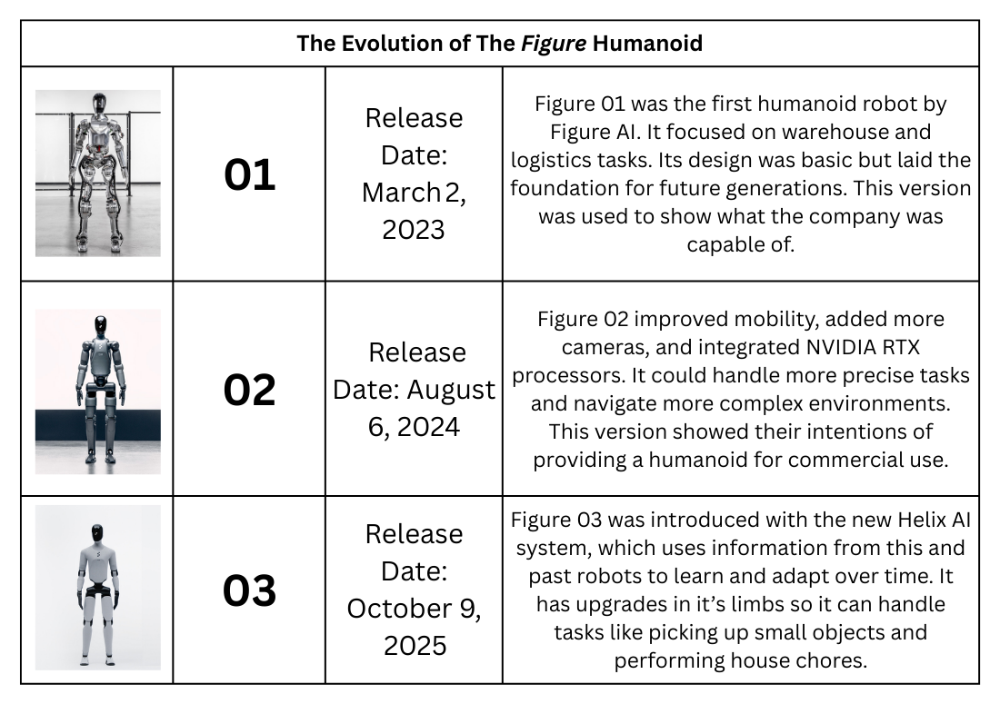
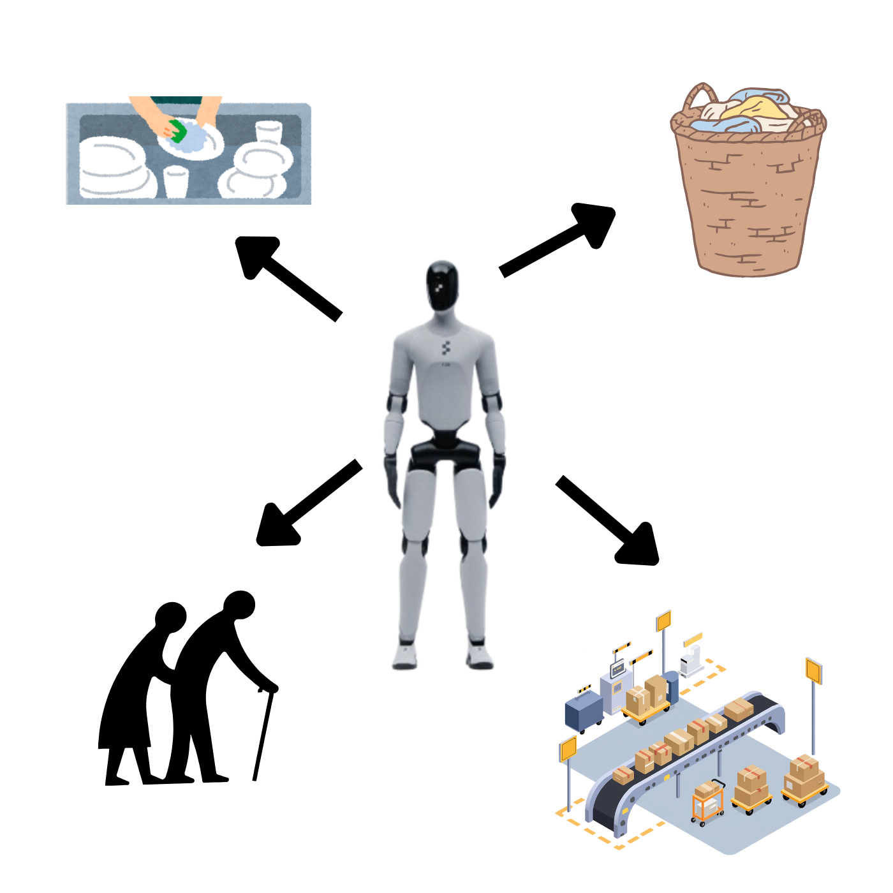

By: Adit Kakkad
| Figure 03 | |
|---|---|
|
|
|
| Created by |
|
| Initial release | October 2025 |
| Type of robot | General-purpose humanoid |
| Current status | In production |
The Figure 03 is a general-purpose humanoid robot, released by the company Figure AI in 2025. The robot is built in the form of a human being, and is able to complete domestic tasks at home. It is built of the AI system called Helix, made by the same company. It is a vision-language-model that is built to learn and improve over time as it completes tasks.

The Figure AI company was founded by Brett Adcock in early 2022. The Figure 03 is the third generation of the Figure robot, and was released in October of 2025. The first version was launched in 2022, which was a bipedal robot which was initially targeted toward the logistics and warehouse sectors. In February 2024, they received over half a million in funding from major names like Microsoft and NVIDIA. They released Figure 02 in August, significantly improving on its limbs, added many more cameras, and introduced new NVIDIA RTX models inside of the robot. After they opened BotQ, their manufacturing facility, they received one more round of financing in September of 2025, which valued the company at $39 billion.
The Figure 03 can be used by either the everyday consumer or commercial enterprises. In home environments, it can be used to do basic tasks such as laundry, dishes, and cleaning. In commercial environments, it can be used in warehouses for sorting and transporting. The robot works by receiving a command (via voice), and completing the task by using its cameras that are found inside the head, as well as on the palm. Improved from the past generations, its hands are built to be able to detect pressure as little as three grams (like a paperclip), and allows it to judge how much pressure is needed to pick up the object properly, without applying too much.
This image shows the postive effects of having a humanoid robot, such as doing household tasks
like laundry and dishes, to working in warehouses for sorting and distribution and helping the elderly.

The Figure 03 allows for the automation of domestic tasks at home, and would be especially useful for people who do not have the time to or are unable to complete these tasks themselves. It can be used to assist the elderly and impaired people do things at home. For businesses, it can help with tasks that people do not want to do or are dangerous to do, such as working in nuclear environments or doing night-shifts, and can significantly reduce injuries by completing more ergonomically-straining professions.
A major negative effect is the widespread disruption of the job market. If these robots can do basic tasks in manufacturing and logistics, these jobs could be taken over, and can lead to job instability for millions of people. The robot also has some security risks, as it’s advanced ‘understanding’ of a home environment and having very sensitive data about the user makes it very vulnerable to security breaches and surveillance.
Figure 03 is a novelty in humanoid technology. It consists of a full sensory suite and limb system built specifically for its Helix AI. It is made with soft materials on its body and a UN38.3 battery. It uses wireless inductive charging on its legs and is made to partake in natural communication. The AI system Helix is a vision-language-action neutral network that can observe its surroundings and interact using the extensive training from previous models. It is capable of controlling two robots at once.